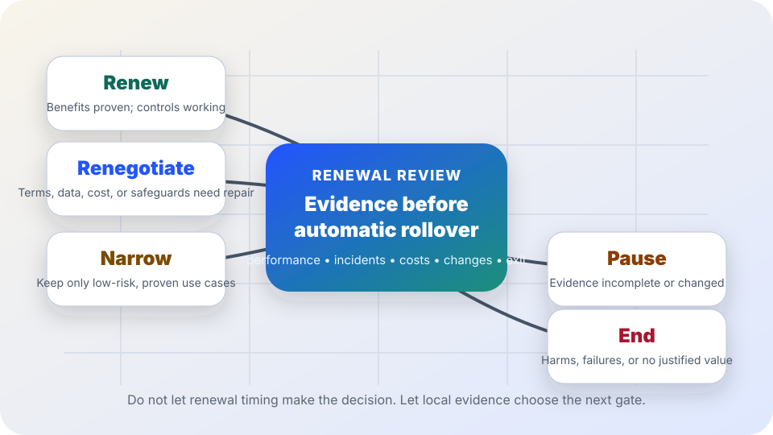

AI governance and renewal decisions
AI renewal decision checklist.
A practical review for deciding whether an AI contract or deployed workflow should renew, renegotiate, narrow, pause, or end after real-world use.
The short answer
An AI renewal should not be an automatic budget rollover. Before a contract, license, model integration, or AI-assisted workflow continues, require a short evidence review that asks: Did the system deliver measured value, preserve quality and rights, stay within acceptable risk, remain understandable to users, and keep exit options realistic?
The useful renewal question is not “Do people like the tool?” or “Did we already pay for it?” It is “What does local evidence show after real use, incidents, support work, vendor changes, staff burden, accessibility needs, privacy obligations, and affected-person feedback are counted?”

Why renewal review matters
NIST’s AI Risk Management Framework describes AI risk work as a lifecycle practice: govern, map, measure, and manage risks with documentation, monitoring, accountability, and context-specific evidence. OMB Memorandum M-24-10 similarly directs U.S. federal agencies to manage AI uses with governance, testing, monitoring, risk management, and safeguards for rights- and safety-impacting uses. Those expectations do not end at launch.
The European Commission’s ethics guidelines for trustworthy AI emphasize human agency and oversight, technical robustness, privacy, transparency, diversity and non-discrimination, societal well-being, and accountability. The FTC warns organizations not to overstate AI performance or comparative benefits without adequate proof. Together, these sources support a practical renewal rule: do not continue, expand, or publicly praise an AI system unless the current evidence still supports the claims, risks, costs, and conditions of use.
1. Build a renewal evidence packet
Performance
Current metrics, baseline comparison, hard-case samples, false positives/negatives, review corrections, failure patterns, and confidence limits.
Human work
Staff review time, training, help-desk tickets, exception handling, correction burden, appeals, public questions, and work shifted to users.
Risk and harm
Incidents, near misses, privacy/security events, accessibility barriers, language-access gaps, complaints, affected groups, and unresolved risk-register items.
Money and lock-in
License cost, implementation/support cost, cloud or usage fees, switching costs, data export status, offboarding plan, and alternative options.
Vendor and model changes
Model/version changes, new features, terms-of-service updates, data-use changes, subcontractors, retention changes, and support commitments.
Public accountability
Notices, consent or refusal paths when relevant, human review, appeal path, owner role, documentation, monitoring date, and public-facing caveats.
2. Check what changed since adoption
| Change to check | Renewal question | Record to keep |
|---|---|---|
| Use case | Is the tool still being used only for the originally approved purpose, population, and risk level? | Approved scope, actual use cases, exceptions, and proposed scope changes. |
| Model or feature | Did a vendor model update, feature rollout, or setting change alter quality, explainability, retention, or risk? | Version notes, release notes, local retest results, and owner approval. |
| Data | Are uploads, prompts, logs, training data, retention periods, or vendor data uses still limited and understood? | Data map, retention schedule, deletion workflow, and contract terms. |
| People affected | Have new groups, languages, disability access needs, or high-impact decisions entered the workflow? | Impact notes, accessibility and language-access checks, and feedback summary. |
| Controls | Do human review, override, audit trail, incident response, and appeal paths still work in practice? | Control test results, incidents, appeals, and correction examples. |
| Claims | Are public statements about time savings, cost savings, accuracy, or service quality still backed by evidence? | Benefits-claim review, measurement method, caveats, and approval date. |
3. Use five renewal decision gates
| Decision | Use when... | Do not use when... |
|---|---|---|
| Renew | The system still meets its purpose, benefits are measured after rework, risks are controlled, users have review or recourse when needed, and monitoring plus exit options remain clear. | The main reason is convenience, sunk cost, vendor pressure, or fear that ending would be embarrassing. |
| Renegotiate | The tool has value but terms need repair: price, data limits, audit access, accessibility, uptime, retention, incident notice, support, model-change notice, or exit rights. | The vendor will not provide the evidence, protections, or data portability needed for accountable use. |
| Narrow | The tool works for specific lower-risk use cases but not for high-impact, sensitive, inaccessible, poorly measured, or hard-to-appeal uses. | Leaders want to keep the budget intact while quietly accepting risks that the evidence does not support. |
| Pause | Evidence is incomplete, a major model/vendor/workflow change occurred, incidents are unresolved, or affected people have not had a fair chance to report problems. | The renewal deadline is being used as the only reason to keep operating without answers. |
| End | The system failed quality floors, created unacceptable harm or risk, lacks proof of value, cannot be governed, or traps the organization in unjustified cost or vendor lock-in. | The only problem is ordinary change-management discomfort and the evidence still supports continued limited use. |
4. A 45-minute renewal meeting agenda
- Name the decision. Are you deciding renewal, renegotiation, narrowing, pause, or end?
- Restate the approved purpose and scope. Has real use stayed within it?
- Review evidence, not anecdotes first. Compare current metrics with the baseline and include rework, support, complaints, and hard cases.
- Review incidents and near misses. Include privacy, security, accessibility, language access, public trust, and affected-person harm.
- Check vendor and model changes. Decide whether changes require retesting, new notices, contract amendments, or a pause.
- Check exit practicality. Can records, prompts, outputs, logs, configurations, and user workflows be exported or replaced without unacceptable disruption?
- Choose one gate and write conditions. Name owner, scope, renewal term, safeguards, monitoring date, public caveats, and reversal triggers.
Stop rules
- Pause if no one can explain what changed in the model, settings, data use, or contract terms since approval.
- Pause if measurement counts AI outputs but not corrections, staff review, appeals, complaints, or downstream rework.
- Pause if accessibility, language access, privacy, security, or affected-person feedback is missing from the renewal packet.
- End if the vendor refuses basic evidence, reasonable safeguards, incident transparency, or practical data export needed for accountable use.
- End if repeated failures or harms continue despite human review, training, narrowing, and remediation.
- Renew only when the benefit claim, risk controls, owner, monitoring plan, and exit path can be explained plainly.
Starter language for a renewal memo
Use this in a decision memo, adapting it to your setting:
AI renewal decision: We reviewed [tool/workflow] for [approved purpose] covering [date range]. The evidence shows [measured benefits] and [known limits] after review, correction, support, incidents, accessibility, privacy/security, appeal, cost, vendor-change, and exit-option checks. The decision is to [renew/renegotiate/narrow/pause/end] because [reason]. The owner is [role], the approved scope is [scope], the next review is [date/trigger], and the reversal or exit condition is [condition].
Related field guide pages
Sources
- NIST — AI Risk Management Framework: https://www.nist.gov/itl/ai-risk-management-framework
- Office of Management and Budget — Memorandum M-24-10, Advancing Governance, Innovation, and Risk Management for Agency Use of Artificial Intelligence: https://www.whitehouse.gov/wp-content/uploads/2024/03/M-24-10-Advancing-Governance-Innovation-and-Risk-Management-for-Agency-Use-of-Artificial-Intelligence.pdf
- European Commission — Ethics guidelines for trustworthy AI: https://digital-strategy.ec.europa.eu/en/library/ethics-guidelines-trustworthy-ai
- Federal Trade Commission — Keep your AI claims in check: https://www.ftc.gov/business-guidance/blog/keep-your-ai-claims-check
This page is public education, not legal, procurement, audit, statistical, contract, or risk-management advice. Renewal decisions need local facts, applicable law, procurement rules, affected-community input, and qualified human accountability.